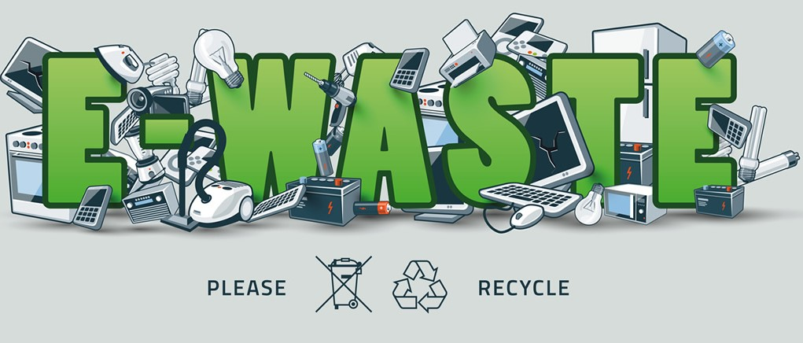
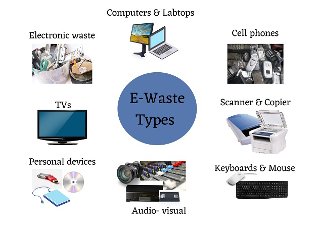
 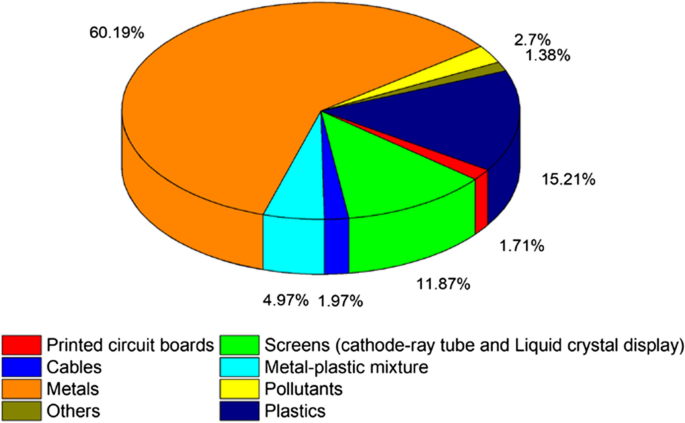
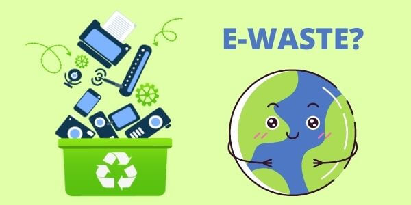
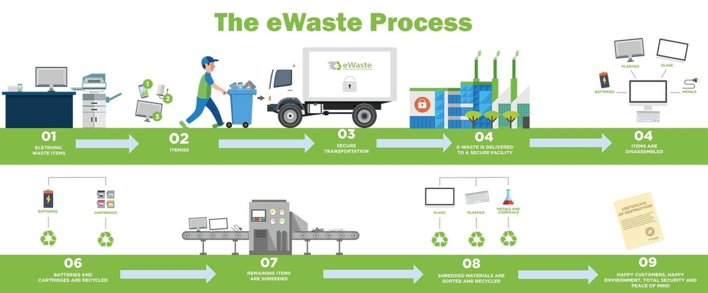
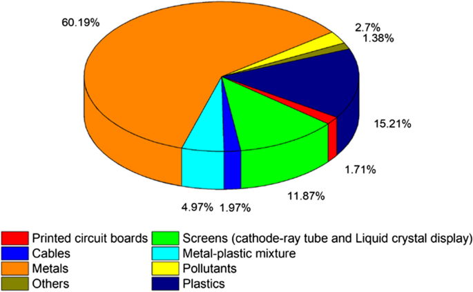
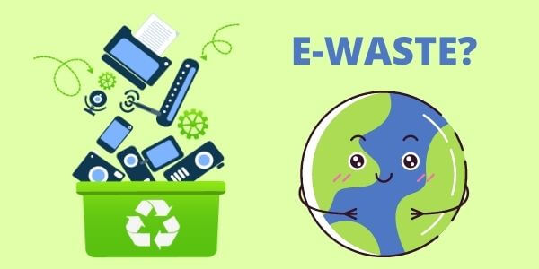
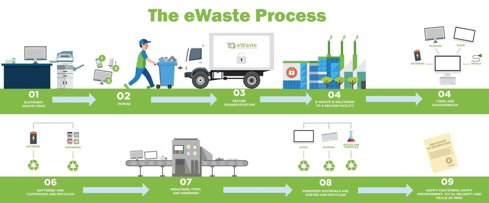
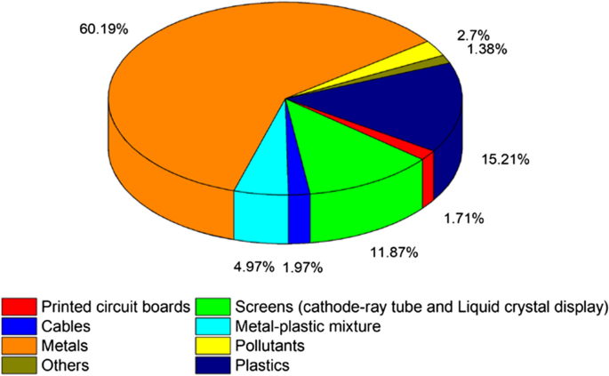
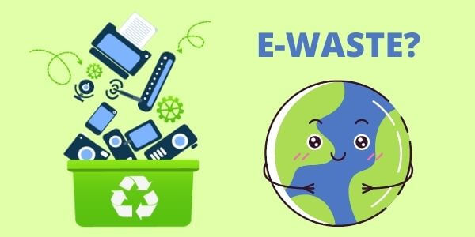
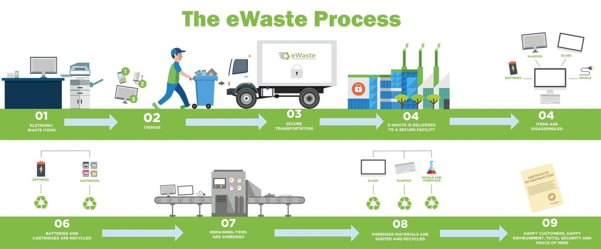
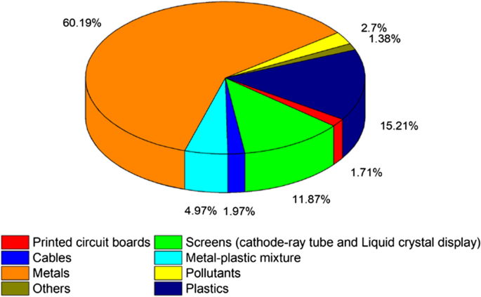
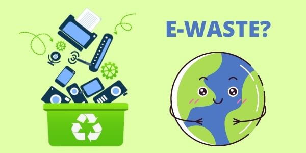
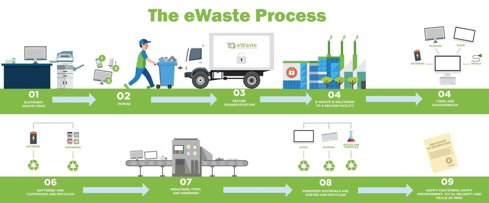

The E-waste Facility Locator project is an initiative aimed at helping individuals and organizations locate and properly dispose of electronic waste, often referred to as e-waste. E-waste includes discarded electronic devices and equipment such as computers, smartphones, televisions, printers, and other electronic appliances. E-waste contains hazardous materials and should not be disposed of in regular landfill sites due to the environmental and health risks associated with improper disposal. The primary purpose is to provide a user-friendly and accessible tool for people to find nearby e-waste recycling or disposal facilities. This helps promote responsible e-waste management by making it convenient for individuals and businesses to recycle or dispose of their electronic devices in an environmentally friendly manner. To enhance user convenience, the project may incorporate geolocation services that allow users to automatically find nearby e-waste facilities based on their current location.
The project's sustainability relies on securing funding and resources to keep it operational. This may involve seeking grants, corporate sponsorships, or charging a nominal fee for premium services or listings. The E-waste Facility Locator project plays a crucial role in addressing the growing issue of electronic waste and contributes to environmental conservation and public health by promoting responsible e-waste disposal and recycling practices. Such initiatives align with global efforts to reduce the environmental impact of electronic waste and minimize the release of hazardous materials into the environment.